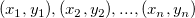
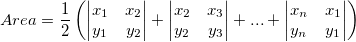
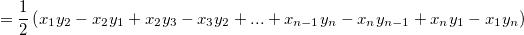

This function is used to calculate the signed area of a planar non-self-intersecting polygon. If the vertices of the polygon are , the area is:


For the area of a convex polygon, if the points are arranged anticlockwise, the area will be positive, and if clockwise, will be negative.
Data types supported:
double: ocmath_d_polygon_area
float: ocmath_f_polygon_area
POINT: ocmath_l_polygon_area
double ocmath_d_polygon_area(double* pX, double* pY, uint nSize)
Polygon area.
EX1
//For this example to run, make sure a worksheet is active in current project void ocmath_d_polygon_area_ex1() { Worksheet wks = Project.ActiveLayer(); wks.SetSize(-1,2); DataRange dr; dr.Add("X", wks, 0, 0, -1, 0); dr.Add("Y", wks, 0, 1, -1, 1); vector vxData, vyData; DWORD dwPlotID; if(dr.GetData(DRR_GET_MISSING | DRR_GET_DEPENDENT | DRR_NO_FACTORS, 0, &dwPlotID, NULL, &vyData, &vxData) < 0) { printf("get data failed!"); return; } uint nSize = vxData.GetSize(); double area = ocmath_d_polygon_area(vxData, vyData, nSize); out_double("area=", area); }
ocmath_f_polygon_area, ocmath_l_polygon_area
origin.h